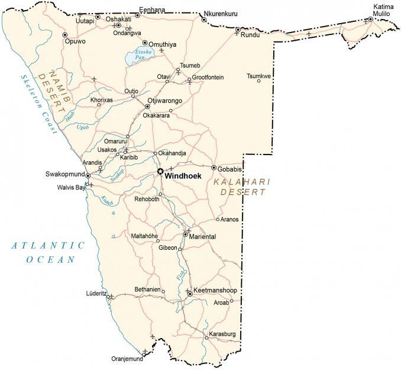

Namibia is an African country located in Southeastern Africa. It’s an incredibly unique country with a wide range of landscapes like its vast deserts, granite mountains, and Skeleton Coast. It borders 5 other countries including Angola to the north, Zambia to the northeast, Zimbabwe to the east, Botswana to the east, and South Africa to the south. Additionally, it shares a 1,572-kilometer (977 mi) coastline along the South Atlantic Ocean.
One of its most notable features is the panhandle-shaped Caprivi Strip in the northeast. Windhoek is the capital and largest city of Namibia. Other major cities include Rundu, Walvis Bay, and Oshakati.
Go back home